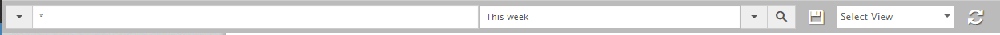

Filter the search according to date and time
You can set the date and time criteria for a search. You can choose the predefined quick time filters, or set a custom time range for your search, or timeline on the bar graph. Time filters are based on UTC.
To know the original time the data was uploaded select the Control and Customize icon, and click Show original time option. This will display the original time as well as the UTC time.
- Do one of the following to filter the search by time and date:
- Date Range Filters — Click the Select Date Range icon to display to the options, and select one of the following:
- Last hour — Displays records in the last hour
- Today — Displays records of the day
- Yesterday — Displays records of yesterday
- This week — Displays records of the week
- This month — Displays records of the current month
- Last 2 days — Displays records for the last 2 days
- Last 7 days — Displays records for the last 7 days
- Last 30 days — Displays records for the past 30 days
Note: All the Last <N> search filters includes the current day too. Last 2 days includes today and yesterday.
- Most recent log — Displays the last uploaded log
- Last 5 logs — Displays the 5 most recent logs irrespective of time
- Last 10 logs — Displays the 10 most recent logs irrespective of time
- Custom Date Range — Invokes the default to and from date range picker
When you select any of the time filter-related options (a through h from the above list), the selection is reflected on the search bar. See below for the change, for example, when the This Week filter is selected. To set a custom date, choose the drop down and select the custom date range.

Click the Search icon to search based on the selected date range.
- Date Picker Filters - Click the field and set the 'from' and 'to' date:
- Date range - Pick an appropriate date.
- Once complete, click Done.
- Click the Search icon to search based on the selected date range.
- Graph Timeline Filter - Click on a bar in the graph to filter the results based on the timeline represented by that bar.
By default, the bar graph's time is based on the UTC time format.
Created with the Personal Edition of HelpNDoc: Free EPub producer